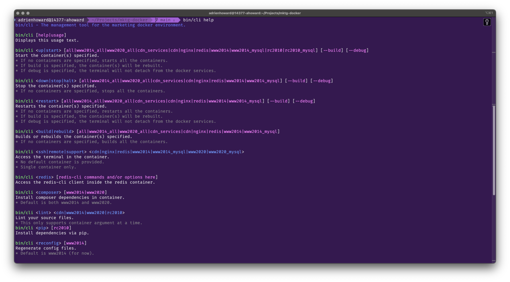

Dockerized Development Environment
- Tool Developer
- Shell scripting
- Containerization
When our chef and vagrant development environment wouldn't run on newer M1 architecture macs, I recreated our whole stack using Docker containers and orchestrated them using docker compose and zsh.
From within the command line interface, it is possible to bring up, put down, and rebuild any combination of containers within the project. Additionally many support commands were built in to aide the developer with common tasks, such as syncing databases across environments, easy terminal access inside containers, and ad-hoc queries on databases or redis instances.
